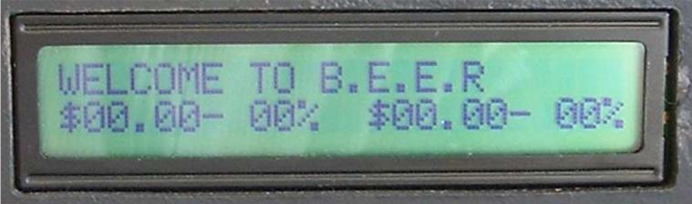

v7 Next Evolution
Ask thyself, what is next in line? It is really a blur, and it will always be a blur due to unforseen circumstances. As we clear up the fog, no we do not see a clear path. Instead we see obstacles ahead, lots of them. We must tackle them one by one. With a clear destination, laser focus, and the determination to get there, I look forward to the day I reach my destination!
In doing great things, one step at a time.
Ho Ming Li, 2012
Skinned using Twitter Bootstrap, with help from CSS-Tricks.
Profile
Passionate about: Sports, Technology, and Photography.
A clone. Well, no, but I do have a twin brother.
A Scout Leader, a volunteer, who is always intrigued.
A hands-on generalist. An athlete in love with the outdoors.
A Bachelor of Applied Science from University of British Columbia.
A Sagittarius Ox who is a Chinese Canadian, or, a Canadian Chinese.
A logical yet passionate guy who is inspired to change the world!
Awards
Officially recognitions... and totally proud of them!
| Jan 2009 | Western Regional Finalists in Enterprize 2009 Business Plan Competition |
| Jul 2008 | Obtained DB2 9 Family Fundamentals Certification |
| Sep 2004 | Completed Advanced Leadership Skills training (Wood Badge) |
| May 2003 | Placed in the 92.2th percentile in the Leonardo Da Vinci Competition |
| Mar 2002 | Earned the Queen's Venturer Award |
| Feb 2002 | Received the Silver Duke of Edinburgh's Award |
| 1998 - 2002 | Received Certificate of Distinction in Gauss, Pascal, Cayley, and Euclid |
Portfolio


New Venture Design - Right-On-Target
Interdisciplinary collaboration with Commerce students towards an entrepreneurial experience aiming to formulate a business plan and engineer a viable product. Our product is a revolutionary pool/billiard training aid that offer visual aids to improve player shots, making the game much more exciting and approachable. Technically, I learned the fundamentals of computer vision and prototyped in C/C++ with the OpenCV library.
OpenGL Computer Graphics - Animation and Model
Using GLUT and OpenGL in C/C++, programmed an interactive 3D environment of realistic models of buildings from campus based on customized standardized text files.
Ternary Elevator Simulation
Design, implement, and document a three-elevators simulation involving user interaction and incorporating error handling and fault tolerance. Many different scenarios were thought of, put into the design, and used as test cases.
Multi-OS Server Experiences
From Jul 2005 to Present
Experienced with Windows, Solaris, AIX, various Linux distros both natively and with hypervisors (VMs)
Configured a headless linux server running ssh, ftp, samba, git, mysql, php, and apache
28th Richmond Scouts Website
From Sep 2008 to Present
Design, implement, and maintain the official website that use PHP and XML for the scouting group.
Adopted self-hosted wordpress to allow for multiple authors to write new posts.
http://richmond28.asnscouts.org

Personal Web Development
From Jun 1997 to Present
From my very first HTML page, design, draw, code, and debug my perosnal website. You're here right now. This is the site, after going through different versions and web technologies (XHTML, XML, PHP, Javascript, VBscript, CSS etc.)
SDL Tic Tac Toe
August 2009
Based on a SDL tutorial, implemented a Windows GUI Tic Tac Toe game using Code::Blocks.
The game is written in C/C++ (OOAD/OOP) using SDL and SDL\_image .
Features include:
- Start screen with menu
- 1P and 2P game modes
- Unbeatable AI
- Instructions/help screen
- Keyboard commands
- Continuous play until user decides to quit
Robotics Controls Simulations
Using MATLAB simulink, VR Toolbox and Novint Falcon, simulated a PUMA560 manipulator that is capable of moving the gripper corresponding to user input motions


I/O Subsystem Design
Given a set of requirements for a mini computer system, designed the circuitry for the I/O subsystem interfacing with several different peripherals including, analog input/outputs (using DAC/ADC), LCD, microswitches, keyboard, and relays/solenoids through Serial/Parallel connections.
8-bit Divider IC Design (VLSI)
In VLSI course, designed, laid out, and simulated a functional 8bitdiv00bit divider using Quartus II and hardware description language written in verilog. Also used the user-unfriendly magic tool for layouts and irsim to verify functionality and simulate timing results.
PCI SATA Controller
Under the supervision of Professor Guy Lemieux, implement and verify a prototype PCI SATA controller that meets the AHCI specifications using a FPGA development board.
Coin Search and Pickup Robot
Using the Motorola HC08 microcontroller, program in C and assembly language, design and build an automated robot to detect and pickup coins and avoid metal decoys.
Liquid Level Sensor
- Designed and built a liquid level sensor to measure the amount of beer (replaced by water) in a glass
- Set up a circuit connecting the capacitors, the speakers, and the LCD display panel to the CME11E9 development board
- Used MATLAB to evaluate an equation for liquid level with respect to capacitance
- With a 68HC11 microcontroller, programmed in C and assembly to compute the liquid level

Abridged portfolio displayed. For full portfolio, view this site in higher resolution.
Work Experience
- Sales Engineer (Stackato) - ActiveState
- Technical Architect - NetApp
- Solution Engineer - Bycast
- XLC/C++ Complier Test - IBM
- Release Engineer/IT - WebCT
- Jr Software Dev - Fortinet
Software Projects
- New Venture Design - Right On Target
- Computer Graphics - OpenGL
- Elevators Simulation - C/C++
- Multi-OS Server Experiences
- 28th Richmond Scouts Website
- Personal Web Development
- SDL Tic Tac Toe
Hardware Projects
- Robotics Controls Simulations
- I/O Subsystem Design
- 8-bit Divider IC Design (VLSI)
- PCI SATA Controller
- Coin Search and Pickup Robot
- Liquid Level Sensor